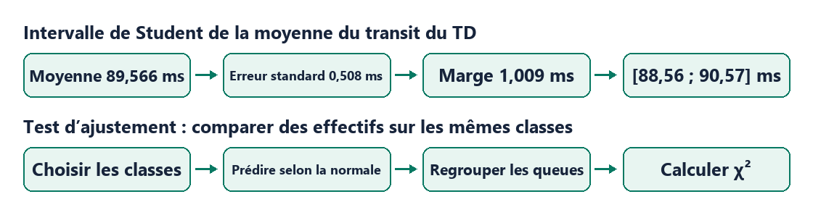

Comprendre le cours
Les explications reprennent les notions utilisées dans les deux TD disponibles du semestre 4.
1. Transformer des observations en tableau
L’effectif d’une valeur est le nombre de fois où elle apparaît. Sa fréquence est l’effectif divisé par N, le nombre total d’observations. La fréquence cumulée à une valeur donnée additionne toutes les fréquences jusqu’à cette valeur incluse.
Exemple avec dix temps d’attente. Quatre personnes attendent 1 minute, trois attendent 2 minutes et trois attendent 4 minutes. La fréquence de 2 minutes est 30 %, et la fréquence cumulée à 2 minutes est 70 %. Le mode est la valeur de l’effectif maximal, ici 1 minute.
2. Distinguer la valeur moyenne et la dispersion
La moyenne pondérée compte chaque valeur autant de fois qu’elle apparaît. Calcule la somme des produits valeur × effectif et divise par N. Dans l’exemple, (4×1 + 3×2 + 3×4)/10 = 2,2 minutes. La variance descriptive moyenne les écarts à la moyenne mis au carré. Tu obtiens le même résultat en calculant la moyenne des carrés moins le carré de la moyenne. L’écart-type est sa racine et se lit dans l’unité d’origine.
La médiane partage les données ordonnées en deux moitiés. Les premier et troisième quartiles donnent des seuils autour de 25 % et 75 %. L’écart Q₃−Q₁ renseigne sur la largeur de la partie centrale. Sur des données brutes, vérifie la convention demandée, car les tableurs proposent plusieurs variantes.
3. Exploiter des données regroupées par intervalles
Une classe [10 ; 15[ contient 10 et toutes les valeurs strictement inférieures à 15. Si les classes ont des largeurs différentes, la surface de chaque barre doit représenter l’effectif dans un histogramme. Prends donc une hauteur proportionnelle à effectif/largeur. Le TD emploie une largeur exprimée en unités de 5.
Si seules les classes sont connues, remplace les mesures par le milieu de leur classe pour estimer la moyenne et l’écart-type. Pour un quartile, repère la première classe dont le cumul atteint le rang voulu, puis interpole en supposant une répartition uniforme dans cette classe. Cette approximation dépend du regroupement.
4. Simuler une loi normale et lire une probabilité
Une variable aléatoire associe une mesure à une expérience. Pour la loi normale, μ positionne le centre et σ représente l’écart-type. La fonction F(x) donne la probabilité que X soit au plus égale à x. Entre a et b, la probabilité vaut F(b)−F(a). Un logiciel peut aussi calculer l’inverse de F, qui transforme une probabilité cumulée en quantile.
C’est le processus du TD sur les résistances. Tire une valeur uniforme entre 0 et 1, puis applique la fonction inverse de la normale de moyenne 1000 Ω et d’écart-type 20 Ω. En répétant, tu obtiens une série plausible. La moyenne d’une série finie varie à chaque nouveau tirage.
5. Ajuster une droite à deux séries
Trace les couples (x, y) en nuage. Pour la droite de Mayer, partage les points ordonnés par x en deux groupes et relie leurs deux points moyens. Pour les moindres carrés, choisis la droite qui minimise les carrés des écarts verticaux. Sa pente vaut covariance(x,y)/variance(x), avec la même convention de calcul dans les deux termes. Son ordonnée à l’origine vaut moyenne(y)−pente×moyenne(x).
Un coefficient de corrélation proche de 1 indique une association linéaire croissante marquée. Vérifie le nuage et la plage où tu as des mesures avant d’utiliser la droite pour prédire.
6. Donner un intervalle à une moyenne

Un échantillon donne une moyenne observée x̄ et un écart-type estimé s. Pour estimer la variance avec les écarts calculés autour de x̄, divise leur somme des carrés par n−1. L’erreur standard vaut s/√n. Elle renseigne sur la variation de x̄ d’un échantillon à l’autre.
Pour des observations indépendantes avec variance de la population inconnue, l’intervalle de Student s’écrit x̄ ± t × s/√n. Prends le quantile bilatéral demandé avec n−1 degrés de liberté. La formule est exacte sous un modèle normal et fournit une approximation usuelle avec un grand échantillon adapté. À 95 %, sur des répétitions de la méthode dans les mêmes conditions, environ 95 % des intervalles contiennent la moyenne de la population.
7. Comparer un modèle aux observations
Le test d’ajustement du khi-deux compare un effectif observé O à un attendu E dans chaque classe. Calcule E = n × probabilité de la classe sous le modèle, puis additionne (O−E)²/E. Couvre toutes les valeurs possibles du modèle, y compris les queues, et regroupe les classes voisines où E est trop petit.
Avec k classes finales et p paramètres estimés sur les mêmes données, prends k−1−p degrés de liberté dans le cadre du TD. Si la statistique dépasse le seuil, rejette le modèle au risque annoncé. Une valeur sous le seuil signifie que les observations sont compatibles avec le modèle au seuil choisi.
Du cours aux TD et TP
Support croisé · Deux classeurs de TD du S4. Les notions ci-dessous suivent leurs données et leurs questions. Aucun poly indépendant ni sujet de TP n’a été retrouvé.
| Notion du cours | Où la travailler | Ce que tu dois savoir refaire |
|---|---|---|
| Fréquences, cumul et dispersion | TD1 exercices I–II | Vérifier le total des effectifs et distinguer variance d’une série et écart-type d’échantillon. |
| Histogramme à classes inégales et quartiles | TD1 exercice II | Utiliser la surface de chaque barre, puis retrouver une médiane par interpolation à partir du cumul. |
| Simulation et ajustement | TD1 exercices III–IV | Vérifier la simulation de la normale et expliquer pourquoi les résultats changent. Comparer les droites de Mayer et des moindres carrés. |
| Intervalle de confiance et khi-deux | TD Estimation | Calculer l’erreur standard, puis comparer observés et attendus. Regrouper les classes de queue avant de compter les degrés de liberté. |
Questions TD & TP
TD1, exercice I · Retrouver le mode, la moyenne et l’écart-type
Énoncé. Avec les effectifs 8, 24, 12, 60, 80 et 16 associés aux valeurs de 0 à 5, complète les fréquences et cumuls, puis calcule mode, moyenne et écart-type.
- Attribue aux valeurs 0 à 5 les effectifs 8, 24, 12, 60, 80 et 16. La somme vaut 200. Les cumuls sont 8, 32, 44, 104, 184 et 200 ; 52 % des observations sont au plus égales à 3.
- La valeur 4 apparaît 80 fois, ce qui en fait le mode. Les deux observations du milieu, de rangs 100 et 101, valent chacune 3.
- Multiplie les valeurs par leurs effectifs, additionne et divise par 200. Tu obtiens 628/200 = 3,14. Applique le même calcul aux carrés : 2292/200 = 11,46. Soustrais 3,14² pour obtenir une variance de 1,6004, puis prends la racine, soit 1,265 environ.
TD1, exercice II · Tracer l’histogramme et estimer les quartiles
Énoncé. Pour la série regroupée en classes de largeurs inégales, complète les effectifs réduits, réalise l’histogramme et estime les quartiles et la médiane à partir des fréquences cumulées.
- Les effectifs sont 3, 14, 25, 20, 18, 26, 10, 4, soit N=120. Pour
[0 ; 10[, la largeur vaut deux unités de 5, donc la hauteur corrigée est 3/2=1,5. Pour[15 ; 20[la largeur vaut une unité, donc la hauteur vaut 25. Répète puis garde les vraies largeurs sur l’axe horizontal. - Le 60ᵉ rang est dans
[20 ; 25[. Le cumul précédent vaut 42 et l’effectif de la classe vaut 20. Avance de (60−42)/20 de la largeur de 5 depuis la borne 20. La médiane estimée vaut 24,5. - Pour Q₁ (rang 30), prends 15+5×(30−17)/25 = 17,6. Pour Q₃ (rang 90), prends 30+5×(90−80)/26 ≈ 31,92. Avec les milieux et leurs poids, la moyenne estimée vaut 25,6875 et l’écart-type descriptif ≈10,95.
TD1, exercice III · Contrôler une simulation de résistances
Énoncé. Simule des résistances suivant une loi normale de moyenne 1000 Ω et d’écart-type 20 Ω. Compare les statistiques de la série simulée à ces paramètres.
- Remplis les lignes demandées avec l’inverse de la loi normale de paramètres 1000 et 20, appliquée à une valeur aléatoire uniforme par ligne. Le classeur utilise
NORMINV(RAND(),1000,20)sous noms anglais. L’équivalent en français dépend de la version du tableur. - Calcule la moyenne et l’écart-type de la plage. Compare chaque série à ses paramètres puis recalcule : chaque valeur et les deux résumés peuvent changer.
- Pour réutiliser exactement le même tirage dans le tableau et le graphique, copie les cellules puis colle leurs valeurs dans une zone de travail. La probabilité théorique entre 980 et 1020 Ω correspond à un écart-type de part et d’autre de 1000, soit environ 68 %.
TD1, exercice IV · Faire les ajustements de la latence
Énoncé. Trace les dix couples de latence, calcule la droite de Mayer et la droite de régression, puis mesure la corrélation.
- Trace les dix points en nuage, avec x en abscisse et la latence en ordonnée. Pour Mayer, calcule les moyennes des cinq premiers puis des cinq derniers couples. Tu obtiens A(3 ; 5,86) et B(8 ; 16,46).
- Pente (16,46−5,86)/(8−3)=2,12. En remplaçant x par 3 et y par 5,86, tu trouves l’ordonnée à l’origine −0,5. Affiche y=2,12x−0,5 sur la plage des mesures.
- Pour les moindres carrés, utilise les dix points. La droite est y ≈ 2,0824x−0,2933 et r≈0,975. Compare la forme du nuage et les écarts verticaux des deux droites sur les mêmes axes.
TD Estimation · Encadrer le temps de transit moyen
Énoncé. À partir des 100 relevés de temps de transit de la feuille, calcule la moyenne et l’écart-type d’échantillon, puis encadre la moyenne par un intervalle à 95 %.
- Sur les 100 observations de la feuille, calcule x̄≈89,5660 et s≈5,08479 avec n−1 au dénominateur de la variance. Pour une moyenne, calcule s/√100≈0,50848.
- Pour 95 % avec 99 degrés de liberté, prends t₀,₉₇₅≈1,9842. La marge vaut environ 1,0089. Ajoute-la et retranche-la à la moyenne.
- Résultat [88,56 ; 90,57] dans l’unité du tableau. Il s’agit de l’intervalle estimé pour la moyenne de la population.
TD Estimation · Comparer les effectifs à une loi normale
Énoncé. Sur les classes bornées par 79, 83, 87, 91, 95 et 99 ms, compare les effectifs du tableur à ceux attendus pour la loi normale ajustée. Le test rejette-t-il le modèle à 5 % ?
- Avec les classes successives délimitées par 79, 83, 87, 91, 95 et 99, les observés sont
1, 8, 19, 32, 25, 13, 2. Prolonge la première et la dernière classe jusqu’aux infinis pour couvrir toute la normale. Sur les données du TD, cela ne modifie pas les observés. - Estime μ par 89,566 et σ par 5,08479. Pour chaque classe, calcule 100×(F(b)−F(a)), soit environ
1,89 ; 7,94 ; 20,86 ; 30,41 ; 24,64 ; 11,08 ; 3,18. Vérifie que leur somme avant arrondi vaut 100. - Les deux effectifs théoriques extrêmes sont sous 5. Regroupe chacun avec son voisin puis calcule la somme (O−E)²/E sur les cinq classes. Tu trouves χ²≈0,36. Avec 5−1−2=2 degrés de liberté, le seuil à 5 % vaut ≈5,99. On ne rejette pas la loi normale à ce seuil.